視覺入門：一疊照片變成一張表
拾頁二手書店的小禾，上禮拜收了三箱舊書，大約兩百本。每一本都要登記書名、作者、譯者、出版社，一本一本打進電腦，打到半夜還打不完。這一課讓 Claude 看懂照片：書排好、拍一張，它就把每一本列成表；二十幾張照片，整理成一張可以下載的試算表。這叫視覺辨識（官方叫 Vision），不用寫程式，用 Claude 的聊天就好。不會的，就問 Claude。
看不到影片？到 YouTube 觀看。每一段的一分鐘短片在 AI 實戰短片播放清單。
先下載示範照片
「拾頁二手書店」的照片：22 張書脊照（三箱、197 本），加上整面書架、版權頁、賣家的手寫收購清單。書店、書名、作者、出版社全部是假的，照片是用 3D 軟體做的。
A｜拍一張就好
把書背朝外排好，用手機正面拍一張。打開 Claude 的聊天，按輸入框的 + → 上傳或新增檔案 → 從電腦上傳，選照片（也可以直接把照片拖進輸入框），再打：
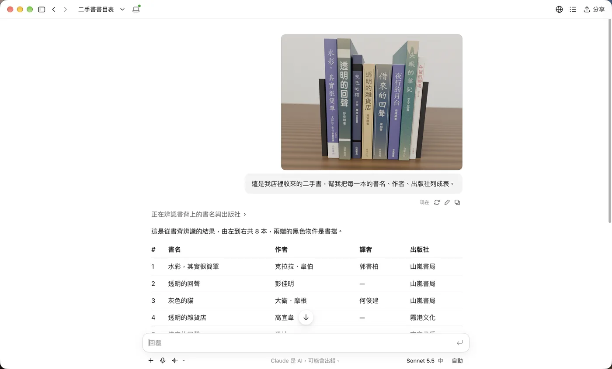
它不是只把字認出來，而是看整張照片：哪一塊是書名、哪一塊是作者、哪一塊是出版社，再放進對的欄位。示範時它還提醒「有三本書名很像，有兩位作者只差一個字，登記時別弄混」。
B｜一疊照片，一張表
三箱書拍了 22 張，全選丟進去會跳出「一則訊息最多只能新增 20 個附件」。分兩次傳就好，第一則先把規矩講好：
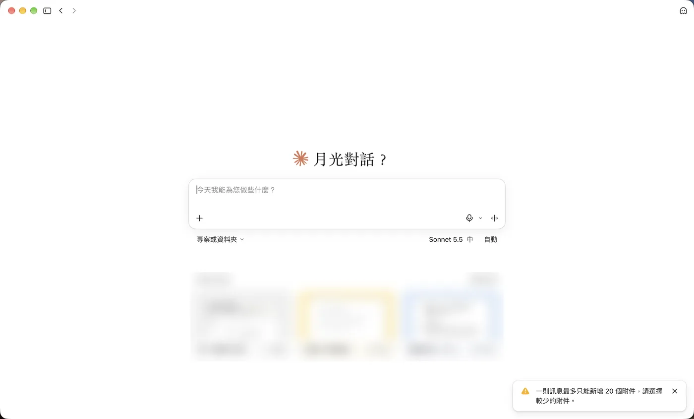
為什麼要先講規矩？照片一多，它一次要看兩百本。沒講好，看不清楚的字它可能自己猜一個填上去。示範時它開了一張 Claude 的試算表，197 本一本一列；被價格貼紙擋住作者的那一本，它照規矩寫「看不清楚」。
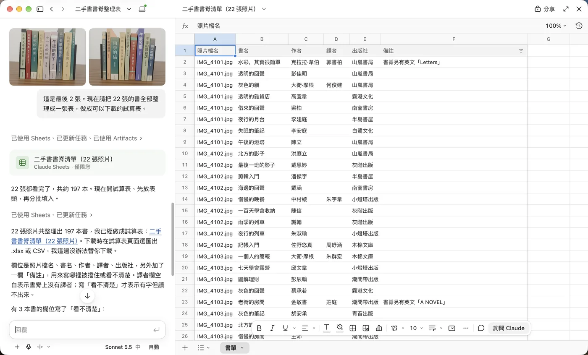
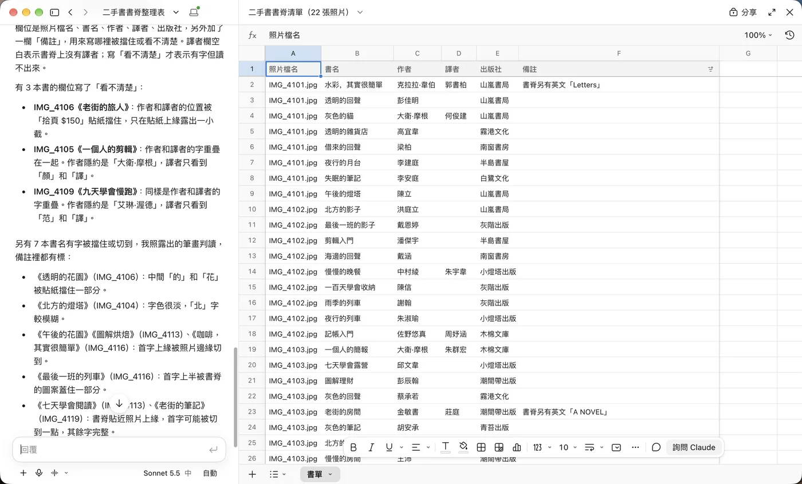
要帶走：按試算表右上角的 分享 → 匯出 → Excel（也可以選 CSV，或送到 Google Sheets）。
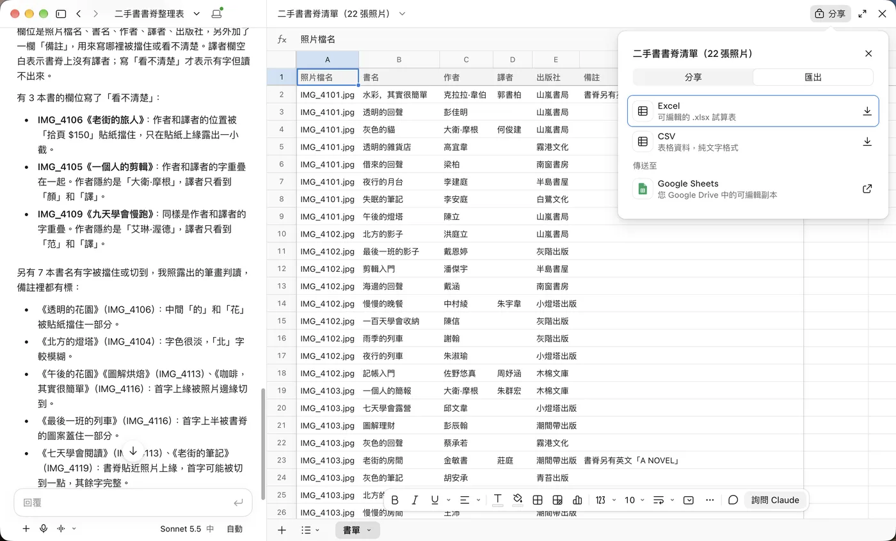
示範用的是付費帳號。如果你的畫面沒有開出試算表，請它「列成表格」，再把表格複製貼到 Excel 或 Google 試算表就好。
C｜它哪裡會看錯
一大堆東西要算一共幾個，它只算得出大概。整面書架拍一張問「總共有幾本」，它說大約 200 本，實際是 174 本。它自己也說書太密、算不準，建議每一層拍一張近照。照做，拍最上面那一層再問，它說 43 本，答對了。
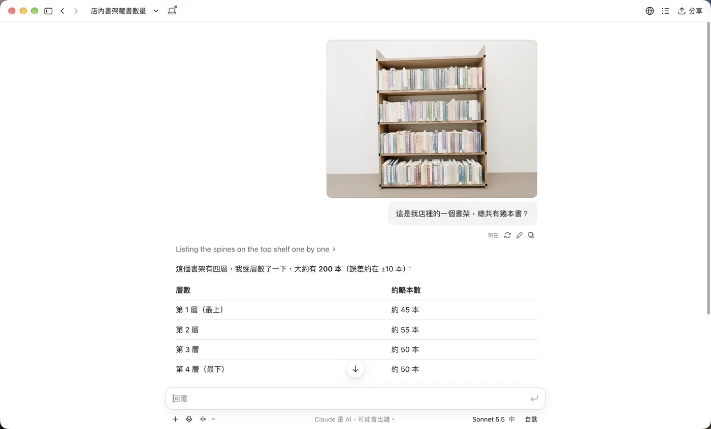
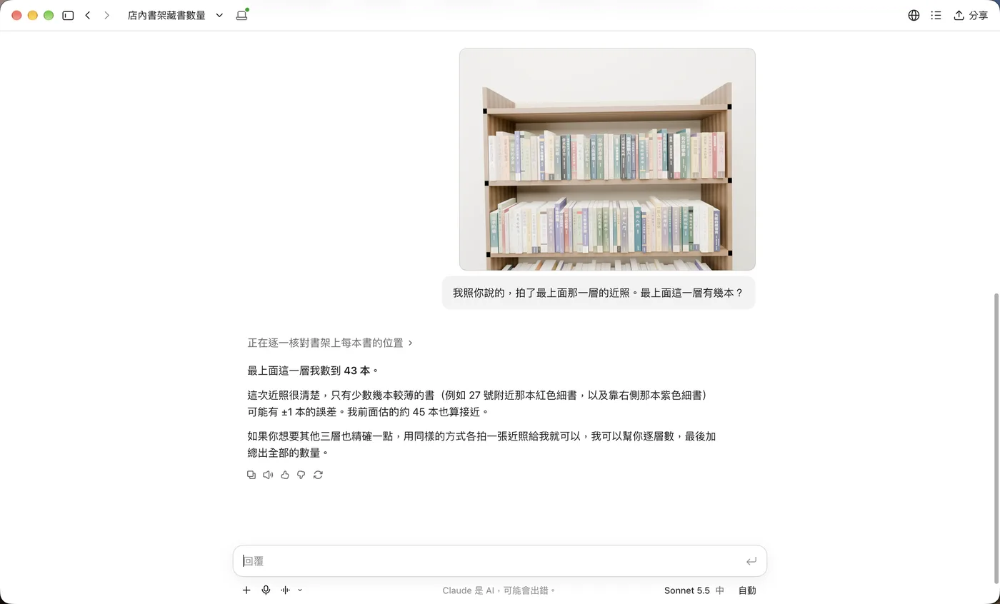
字太小、太遠、沒對焦，它會不確定。版權頁遠遠拍一張問定價，它放大來看，說「看起來是 350 元，不過不太確定，也可能是 380 或 330」，請你拍特寫。拍近一點再問，它就很確定，連作者、譯者、出版日期都讀出來。
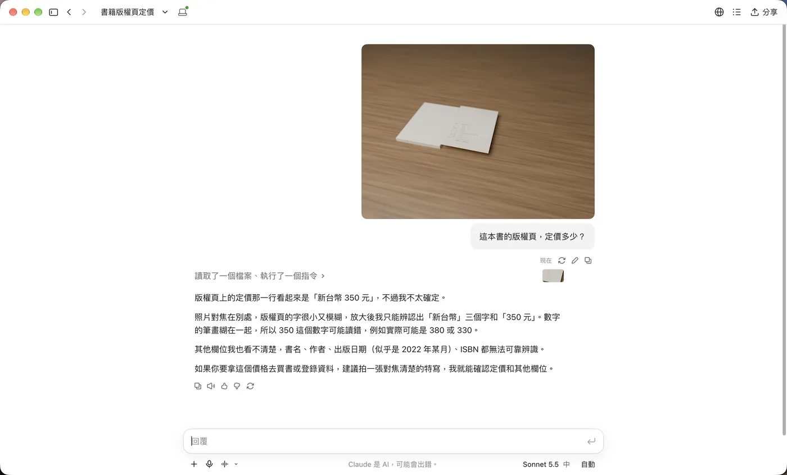
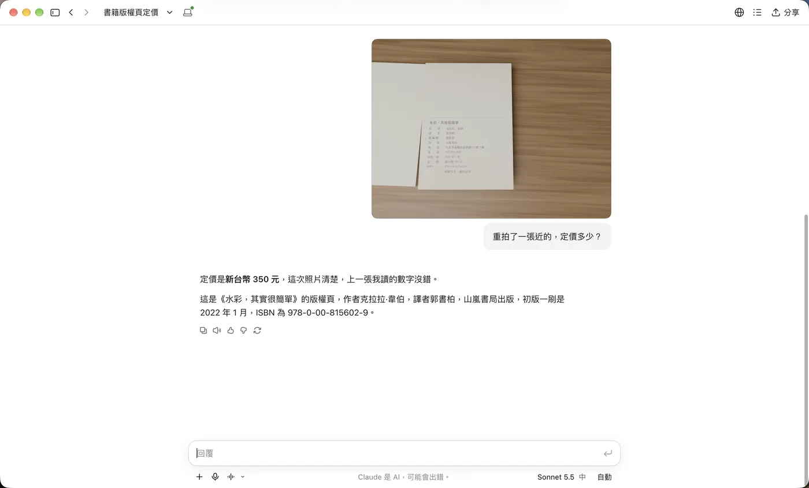
長得很像的字最容易錯。整理兩百本的時候，作者名字裡的「妤」，它有幾次看成「妍」。
要緊的金額、名字、數量，還是自己再看一眼。
D｜不只是認字：用照片對照清單
賣家給了一張手寫收購清單，寫了 64 本，箱子裡只有 62 本。把第一箱的七張書脊照（IMG_4101–4107）和兩張清單照片一起傳上去：
示範包裡的 IMG_4151、4152 是故意拍斜、沒對焦的清單。它沒有硬猜，只說看得出最上面一小段，請你「手機正對著紙、對焦在紙面中央、光線均勻」再拍一次。換成重拍的 IMG_4161、4162，它就讀出 64 本，找到少的兩本：《手沖的五個好習慣》和《借來的燈塔》。
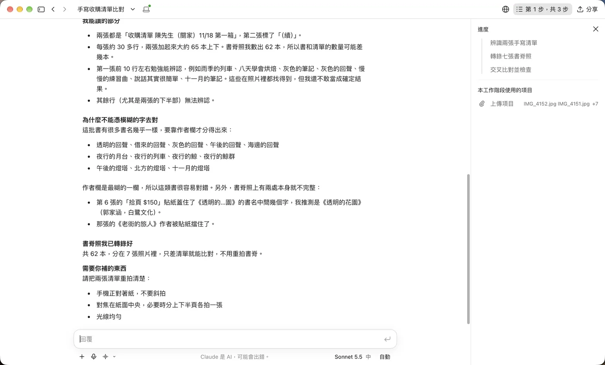
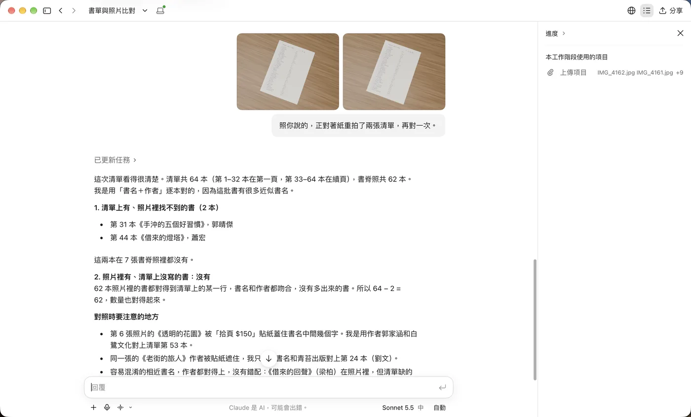
同一招也能拿來對照五金店的貨架、早餐店的手寫叫貨單、藥品的有效期限。
客人的名字、電話、地址、身分證，傳上去之前先用相簿的編輯功能塗掉或裁掉。
加碼：看照片判斷書況？目前還不太行
我們也試了「九成新賣 150 元、有泛黃 100 元、書脊破損 50 元，看照片判斷每一本的書況定價」。它分得出乾淨和泛黃，可是第一箱裡三本書脊破損的書，它一本都沒看出來，說「沒有看到裂開、缺角或撕裂的書脊」。書況這種細節，還是自己看比較準；它適合先幫你把書名、作者打好。
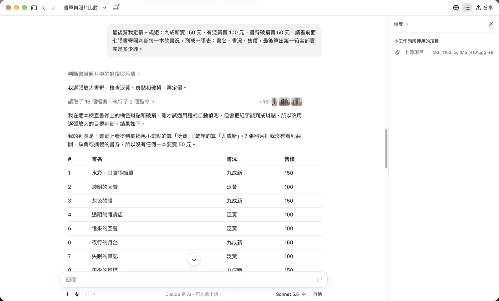
今天的作業
先拍一張就好
把店裡的一排商品、一疊單據，或一面書架拍一張，請它列成表。
再試一疊照片
拍十張以上，先講好欄位和「看不清楚就寫看不清楚」，再請它整理成一張表。
過程中卡住了，就截圖問 Claude。
官方來源
資料查證日期：2026 年 11 月 22 日。App 的畫面是 2026 年 11 月 21 日用付費帳號、繁體中文介面實際操作的樣子。AI 工具更新很快，功能和價格請以官方網站為準。